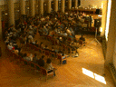
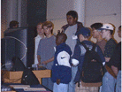
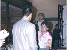
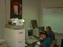
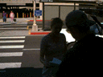

Conference '96 Pictures
The Digital Cameras came out of hiding for the conference again this
year... Here are the GIFs we have converted so far:
The Office
Aftermath
Paul Watts -
"It's All You."
Advanced Micro
Devices
Amy Ryan at the
Registration Desk
Amy again
Andersen
Consulting
BALR
Consulting
Chillin with
da Boyz
Code to Live
ComEd
Crowe Chizek
Deloitte & Touche
More
Deloitte & Touche
Dunn Systems
More Dunn Systems
Eric Adams
Eric Adams
again
Whoa. Cool Flash.
Guidant
Corporation
More Guidant
Jay Kreibich
Jay Kreibich
again
Jim of
Lante Corporation
The Keynote
speech
 Kinesoft
at the "beach"
Kinesoft
at the "beach"
More Kinesoft
The Kiosks in
action
Roxanne Herrera
with McBain, the PowerMac donated by Symantec
Roxanne and
McBain again
MechMania II
More
MechMania II
MechManiacs
 More
MechManiacs
More
MechManiacs
Microsoft
Microsoft
again
The N64 Ate my Brain!
The N64
with Tellabs
 The N64
was a magnet for high school kids
Paul Nash
Paul Nash
Again
 Nathan
Schrenk
Nathan
Schrenk
The Man with
No Face
Alex
Osdazinski in action
Alex
Osdazinski continues
 Patrick
Coulson, SGI's fun-lovin recruiter
More
Patrick
 Brian
holding the "plaque"
Brian
holding the "plaque"
Mike
Ringenberg chillin at the registration desk
Erich
Ringewald
Erich
Ringewald continues
Erich
Ringewald again
Mark Roth and Dale Schouten
We took lots
of test pictures of Roxanne Herrera...
Roxanne
Herrera of Symantec
More Roxanne
Still more...
Dale
Schouten
 Dale
Schouten Again
Dale
Schouten Again
Dale at the Intel booth
Dale at the Intel booth again
Silicon Graphics
Silicon Graphics
Again
The
MechMania II victors: Squirrels In Space
State
Farm
Symantec
Symantec (dark image)
 Tellabs
Tellabs
Christy
Schumacher talking with those wacky Tellabs guys
A panicked Dan
Wellman
Alex Zoghlin
on Entrepreneurship
Alex Zoghlin
continues...
Alex Zoghlin
again
Here are some pics taken by KC Smith.
And here are some photos taken by Brian
Swetland.
The Roadtrip
Some hapless travelers never learned how to clear out their Quicktake
when they were through with it. Here is their saga.
Whoa! Pavement!
Yup,
that's still the road we're on...
No
Parallax here...
That's a nice bump you got there...
Aaaaahhhh!!! Guardrail!
The
landscape certainly is streaky in (Colorado?)
Yup,
road's still there...
Enough of the road already!!!
Shouldn't you be driving?
Is
that a guardrail or the Greatest American Hero?
Hey, how's it goin?
Pretty nice landscape shot here.
Just a little farther back...
You drove a van with a
hatchback?
May I help you?
What airport is this, anyway? Phoenix?
 Kinesoft
at the "beach"
Kinesoft
at the "beach" More
MechManiacs
More
MechManiacs Nathan
Schrenk
Nathan
Schrenk Brian
holding the "plaque"
Brian
holding the "plaque" Dale
Schouten Again
Dale
Schouten Again Tellabs
Tellabs
{kind=link}
{kind=link}
{kind=link}
{kind=link}
{kind=link}
{kind=link}
{kind=link}
{kind=link}
{kind=link}
{kind=link}
{kind=link}
{kind=link}
{kind=link}
{kind=link}
{kind=link}
{kind=link}